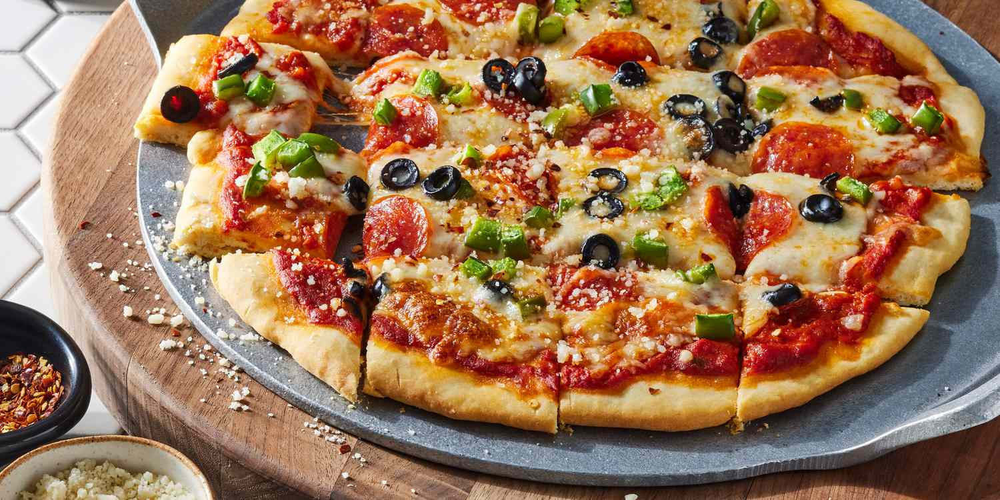

Pizza Recipe
If you want to back to Homepage click herec

No-Yeast Pizza Crust
This no-yeast pizza dough is quick to make and bakes up into a tender and tasty crust for your favorite pizza toppings.
No yeast? No problem! This no-yeast pizza dough recipe is not only quicker than traditional dough, it yields perfect homemade pizza crust every time!
Ingredients
You'll need just five Kitchen staple ingredien
- Flour:This eastless pizza crust starts with all-purpose flour.
- Backing powder:Without yeast, the pizza dough needs baking powder to rise.
- SaltA pinch of salt enhances the flavor and strengthens the gluten.
- Milk:You’ll need ½ cup of fat-free milk.
- Olive oil:Olive oil locks in moisture and keeps the dough from drying out.
Steps
- Gather all ingredients.
- Mix flour, baking powder, and salt together in a bowl; stir in milk and olive oil until a soft dough forms.
- Turn dough onto a lightly floured surface and knead 10 times. Shape dough into a ball; cover with an inverted bowl and let sit for 10 minutes. Meanwhile, preheat the oven to 400 degrees F (200 degrees C).
- Roll dough into a 12-inch circle on a baking sheet.
- Bake the crust in the preheated oven for 8 minutes.
- Add your favorite toppings and bake until the crust is golden brown, about 10 to 15 minutes more. Enjoy!